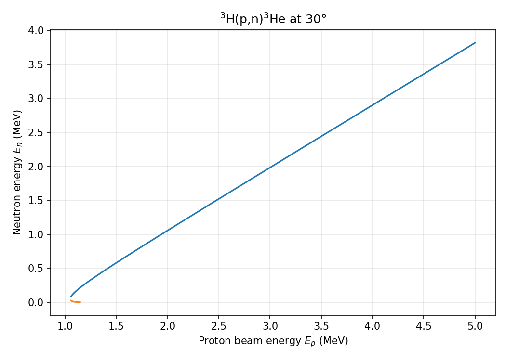

Plotting Example
You can use matplotlib to visualize kinematic relationships.
Example: Ejectile Energy vs Recoil Angle
import matplotlib.pyplot as plt
data = rxn.compute_arrays()
plt.plot(data["theta4"], data["e3"])
plt.xlabel("Recoil Angle θ₄ (rad)")
plt.ylabel("Ejectile Energy E₃ (MeV)")
plt.title("E₃ vs θ₄")
plt.grid(True)
plt.show()
Kinematic Curves at Fixed Lab Angle
kinematic_curve sweeps over a range of beam energies at a fixed lab angle,
returning ejectile kinematics for both solution branches.
import numpy as np
import matplotlib.pyplot as plt
from reaction_kinematics import kinematic_curve
ek_array = np.linspace(1.0, 5.0, 500)
branches = kinematic_curve("p", "3H", "n", "3He", np.deg2rad(30), ek_array)
for branch in branches:
plt.plot(branch["ek"], branch["e3"])
plt.xlabel("Proton beam energy $E_p$ (MeV)")
plt.ylabel("Neutron energy $E_n$ (MeV)")
plt.show()
Each call returns a list of two dicts (branch 0 = high-energy solution,
branch 1 = low-energy solution), each containing arrays for ek, e3, e4,
theta4, v3, and v4. Where a branch does not exist the values are NaN.

The full example script is at examples/kinematic_curve_example.py.